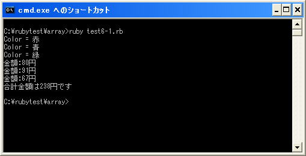

配列に対する繰り返し
配列オブジェクトは範囲オブジェクトと同じく複数の要素を持つオブジェクトです。ここでは配列オブジェクトに対して繰り返し処理を行う方法を確認していきます。
for文
for文のオブジェクトに配列オブジェクトを指定すると、配列に含まれる要素を順に取り出して繰り返し処理が行われます。(for文については「for文」を参照して下さい)。
for 変数 in 配列オブジェクト do 実行する処理1 実行する処理2 end
具体的には次のように記述します。
array = Array["赤", "青", "緑"]
for var in array do
print("Color = " + var + "¥n")
end
配列の含まれる要素が順に変数「var」に代入され「do」から「end」までの処理が繰り返し実行されます。
eachメソッド
Arrayクラスにも「each」メソッドは用意されています。配列オブジェクトに対して「each」メソッドを実行すると、配列に含まれる要素を順に取り出して繰り返し処理が行われます。(eachメソッドについては「eachメソッド」を参照して下さい)。
配列オブジェクト.each{|変数|
実行する処理1
実行する処理2
}
具体的には次のように記述します。
array = Array["赤", "青", "緑"]
array.each{|var|
print("Color = " + var + "¥n")
}
配列の含まれる要素が順に変数「var」に代入され「{」から「}」までの処理が繰り返し実行されます。
複数の変数を使う場合と比較して、配列を使用した場合には繰り返し処理を使うことが出来ます。結果として複数のオブジェクトをの値を連続して処理したい場合に簡潔に記述することが出来ます。
サンプルプログラム
では簡単なプログラムで確認して見ます。
#! ruby -Ku
require "kconv"
array = Array["赤", "青", "緑"]
for var in array do
print(Kconv.tosjis("Color = " + var + "¥n"))
end
array = Array[80, 91, 67]
sum = 0
array.each{|num|
sum += num
print(Kconv.tosjis("金額:"), num, Kconv.tosjis("円¥n"))
}
print(Kconv.tosjis("合計金額は"), sum, Kconv.tosjis("円です¥n"))
上記のプログラムを「test6-1.rb」として保存します。文字コードはUTF-8です。そして下記のように実行して下さい。

( Written by Tatsuo Ikura )

著者 / TATSUO IKURA
初心者～中級者の方を対象としたプログラミング方法や開発環境の構築の解説を行うサイトの運営を行っています。